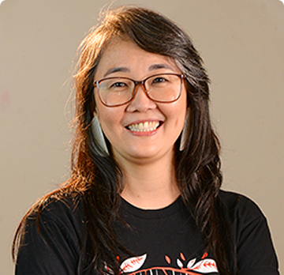
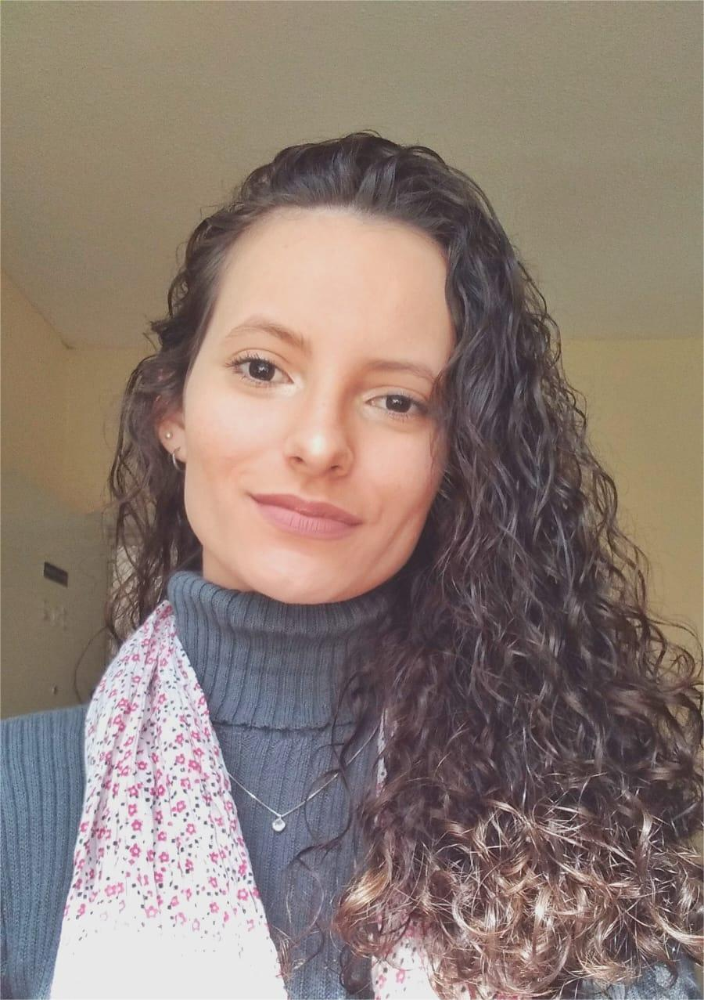
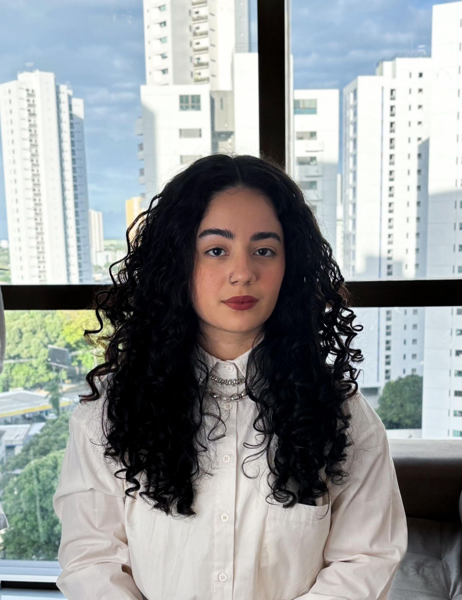

Conheça a nossa equipe!
-

Patricia Takako Endo
Professora Livre-Docente da Universidade de Pernambuco (UPE), atuando no curso de Bacharelado em Sistemas de Informação - Campus Caruaru, e como membro permanente do Programa de Pós-Graduação em Engenharia de Computação (PPGEC) da Escola Politécnica de Pernambuco (POLI/UPE). É pesquisadora líder do grupo de pesquisa dotLAB Brazil da UPE. Possui doutorado em Ciência da Computação pelo Centro de Informática (CIn) pela UFPE (2014), mestrado em Ciência da Computação pela UFPE (2008) na área de Redes de Computadores e graduação em Engenharia de Computação pela Universidade Federal do Pará (2005). Tem experiência na área de Engenharia da Computação, com ênfase em redes de computadores e data science, atuando principalmente nos seguintes temas: cloud computing, data science aplicada a saúde, com foco em doenças negligenciadas e saúde materna e neonatal. Bolsista de Produtividade em Pesquisa do CNPq - Nível C. Laureada do Prêmio Para Mulheres na Ciência 2022; e do 1o. Prêmio Mulheres e Ciência 2024, do CNPq.
-

Flávio Leandro de Morais
Mestre em Engenharia da Computação pela Universidade de Pernambuco e doutorando pela mesma instituição. Doutorando/Bolsista da Fundação de Amparo à Ciência e Tecnologia de Pernambuco (FACEPE) no Programa de Pós-graduação em Engenharia de Computação (PPGEC), pela Universidade de Pernambuco (UPE). Responsável geral do desenvolvimento do projeto de pesquisa.
-
Waldemar Brandão Neto
Enfermeiro, Doutor em Saúde da Criança e do Adolescente pela Universidade Federal de Pernambuco. Professor Adjunto da Faculdade de Enfermagem Nossa Senhora das Graças (FENSG) da Universidade de Pernambuco (UPE) e é tutor do Programa de Residência Multiprofissional em Neonatologia do CISAM/COREMU/UPE. Pesquisador parceiro.
-
Katia Maria Mendes
Enfermeira e Mestra em Enfermagem pelo Programa Associado de Pós-Graduação em Enfermagem UPE/UEPB. Coordenadora de enfermagem em neonatologia do CISAM; coordenadora assistencial do Programa de Residência Multiprofissional Neonatal e Coordenadora e docente do Curso de Pós-Graduação Lato Sensu de Enfermagem em UTI Neonatal e Pediátrica da Faculdade IDE. Pesquisadora parceira e responsável direta da parceria dotlab Brazil e CISAM.
-

Stephany Paula da Silva Canejo
Enfermeira pelo Centro Universitário dos Guararapes (UNIFG) e especialista em Saúde Pública. Mestranda no Programa Associado de Pós-graduação em Enfermagem da Universidade de Pernambuco (PAPGEnf UPE/UEPB) e professora de Enfermagem pela Escola Técnica Irmã Dulce (EID). Pesquisadora parceira.
-
Anna Beatriz Silva
Graduação em Sistemas de Informação pela Universidade de Pernambuco. Mestranda em Engenharia da Computação pelo PPGEC da Universidade de Pernambuco. Pesquisa de mestrado em um subcampo do projeto guarda-chuva, especificamente em displasia broncopulmonar.
-
Maria Leticia de Oliveira Mota
Graduanda em Sistemas de Informação pela Universidade de Pernambuco. Graduanda em Sistemas de Informação pela Universidade de Pernambuco. Desenvolvimento de um projeto de iniciação científica dentro do projeto guarda-chuva, especificamente em desenvolver um painel e um modelo para predição de sepse neonatal.
-
Keisy Lizandra Silva Vasconcelos
Graduanda em Sistemas de Informação pela Universidade de Pernambuco. Graduanda em Sistemas de Informação pela Universidade de Pernambuco. Desenvolvimento de um projeto de iniciação científica dentro do projeto guarda-chuva, especificamente em desenvolver um painel e um modelo para predição de hipertensão pulmonar neonatal.
-

Maria Eduarda Ferro de Mello
Mestre em Engenharia da Computação pela Universidade de Pernambuco (2025) e bacharel em Biomedicina pela Universidade Federal de Pernambuco (2022). Bolsista de Desenvolvimento Tecnológico Industrial do CNPq - Nível B. Pesquisadora parceira.
-
Elisson da Silva Rocha
Professor Assistente da Universidade de Pernambuco (UPE), atuando nos cursos de Licenciatura em Computação e Bacharel em Engenharia de Software, Campus Garanhuns. É mestre e doutor pelo Programa de Pós-Graduação em Engenharia da Computação da Escola Politécnica de Pernambuco (POLI/UPE), e graduado em Sistemas de Informação, pela UPE Campus Caruaru (2017). Faz parte do Grupo de Pesquisa dotLAB Brazil, e suas áreas de interesse são: Deep Learning, Machine Learning e análise de dados de saúde e Indústria 4.0.
-
Maicon Herverton Lino Ferreira da Silva Barros
Doutor em Engenharia de Computação pelo programa de pós-graduação da Escola Politécnica de Pernambuco, da Universidade de Pernambuco. Professor na Universidade de Pernambuco. Pesquisador parceiro